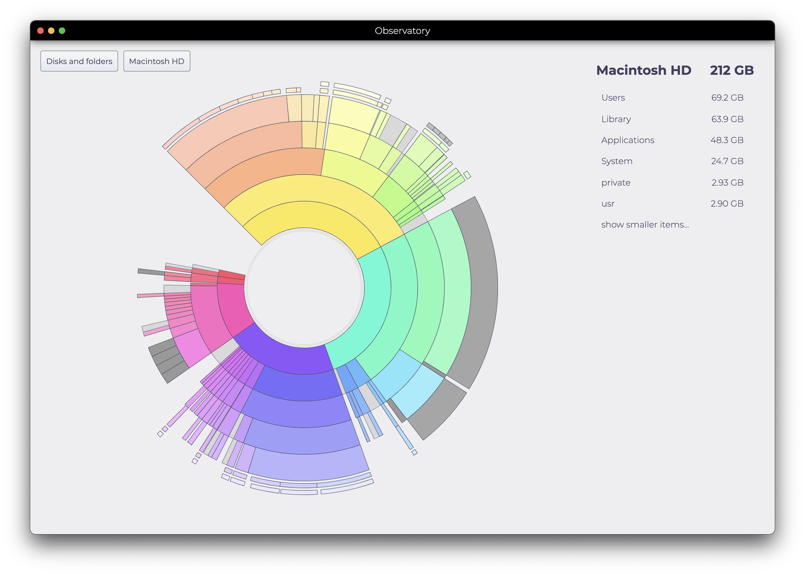

A real interface
A sunburst that actually fits the data, a list view that mirrors it, and a tree for when you want to dig. No squashed treemaps, no labels stacked on labels.
Observatory is a modern, cross-platform disk-usage analyzer. Point it at a drive, get back a readable picture of where every gigabyte went — without the dated UI, the platform lock-in, or the bewildering settings panel.
macOS Linux Windows

A sunburst that actually fits the data, a list view that mirrors it, and a tree for when you want to dig. No squashed treemaps, no labels stacked on labels.
One app on macOS, Linux, and Windows. Same shortcuts, same layout, same scans — wherever you keep the disks that fill up.
Queue up files and folders as you browse, review the list, then send the lot to the trash in one pass. No accidental deletes from a stray double-click.
Observatory is open source and very much in motion — the scanning engine is being rewritten in Rust to close the gap with native tools. Speed today is "fine"; soon, "fast."
Releases live on GitHub. Pick the artifact for your platform —
.dmg for macOS, .exe for Windows,
.zip for Linux. Or build from source with
yarn forge.